Techwriter Bot
Privacy-first AI documentation tooling engine for technical-writing teams.
I designed and shipped a privacy-first documentation tooling engine that helps technical-writing teams review documents, work with code context, produce artifacts, and preserve human control.
The Problem
Technical writers need AI help that can be verified. They move between drafts, source context, API references, release notes, diagrams, exports, and deployment evidence while keeping private content under control.
Before
Writers use generic AI chat, manually inspect source references, rebuild diagrams, copy content into Markdown, and still need to prove the tool did not invent facts or retain sensitive content.
After
Writers use one client-owned workspace for active-session docs, deterministic review, bounded graph lookup, coverage mapping, code-area explanation, artifacts, and explicit exports.
What Was Built
- AI chat with provider health, routing, and failover.
- Active-session document context with filename, heading, and line citations.
- Document review for glossary, API reference, release-note, and OpenAPI operation checks.
- Bounded source/code graph lookup, coverage mapping, and code-area explanation.
- Artifact generation, recovery, source view, SVG/PNG/source export, and mobile overlay handling.
- Explicit session export/import and Markdown export.
- Client deployment kit and GitHub-backed recovery trail.
The product is a bounded, human-controlled tool agent. It is not an autonomous background system.
App Shell And Privacy Boundary
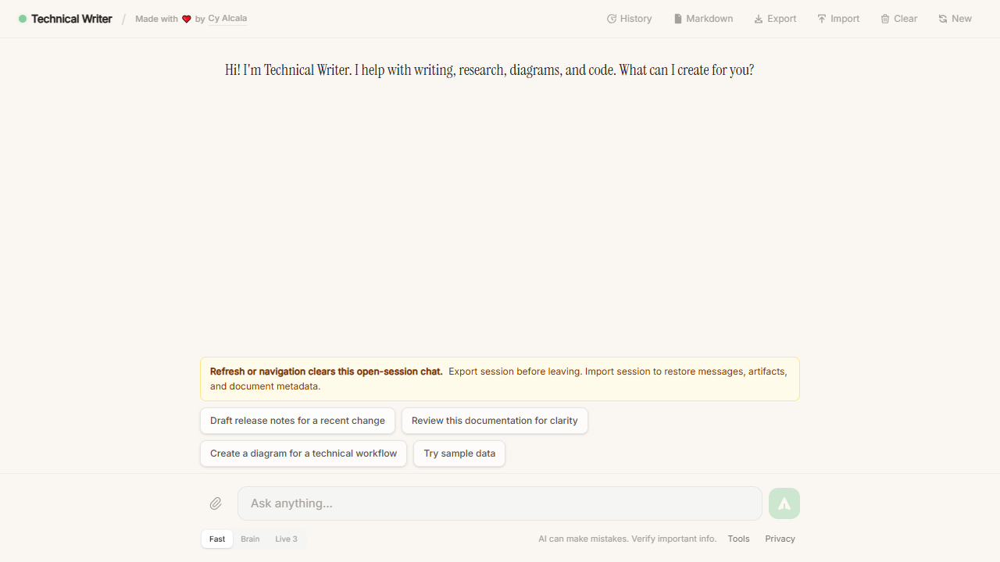
App shell, active-session notice, suggested prompts, and export/import controls.
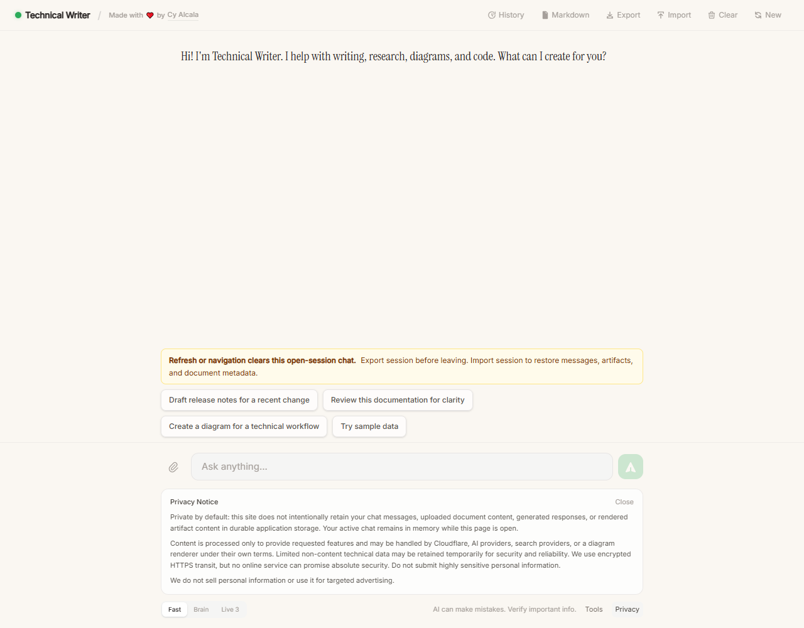
Expanded privacy notice explaining active-session and durable-storage boundaries.
Sample Data And Document Review
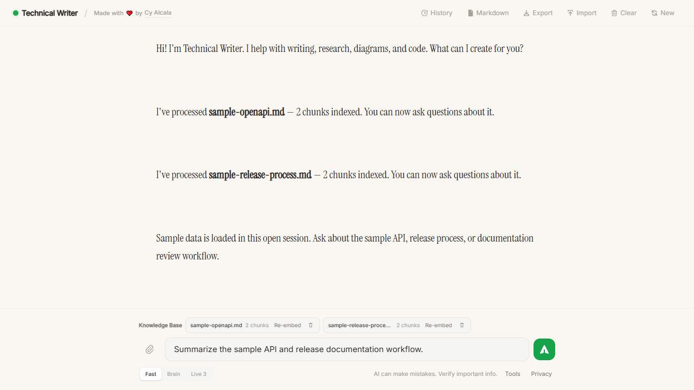
Sample data lets a fresh deployment demonstrate value without client data.
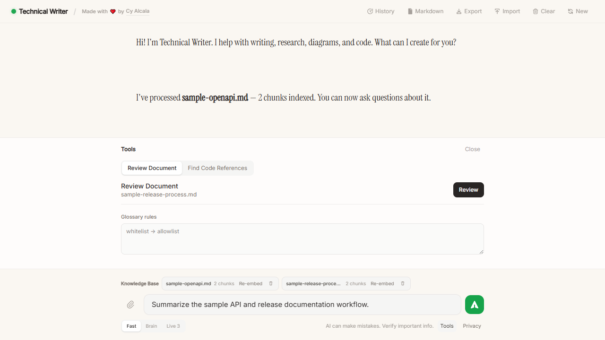
Review Document stays compact and explicit.
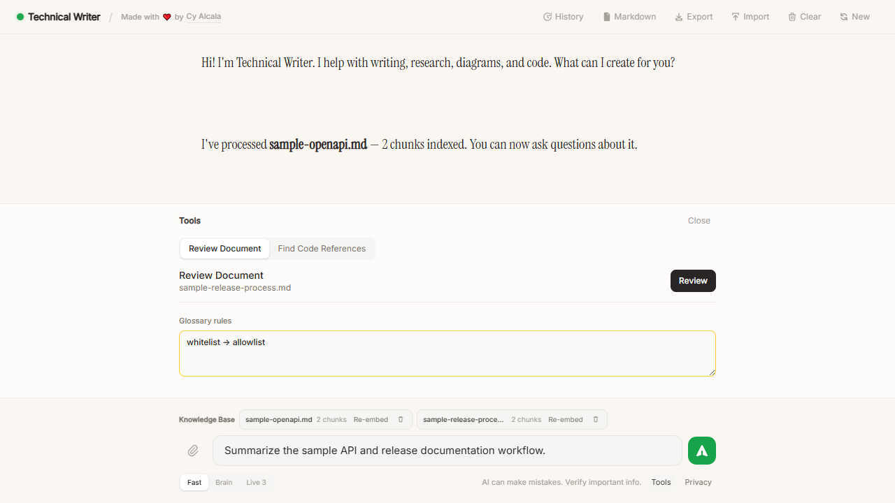
Glossary rules are active-session input, not durable policy storage.
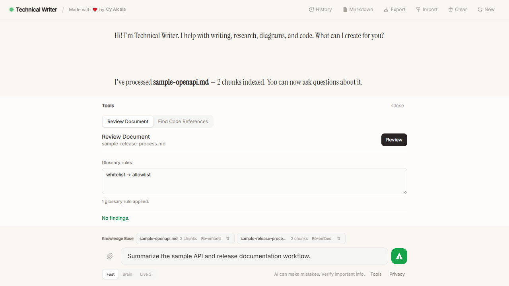
Deterministic review result after explicit user action.
Bounded Source Context Tools
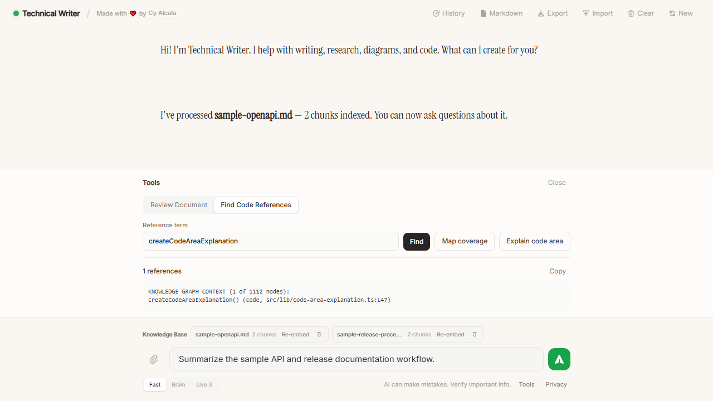
Bounded graph lookup returns constrained source references.
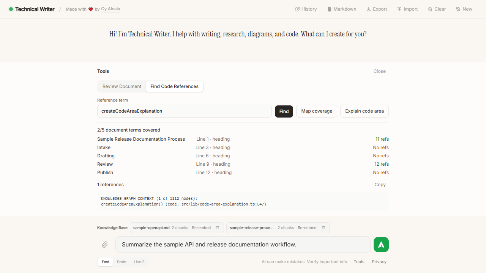
Coverage map connects active-document terms to source references.
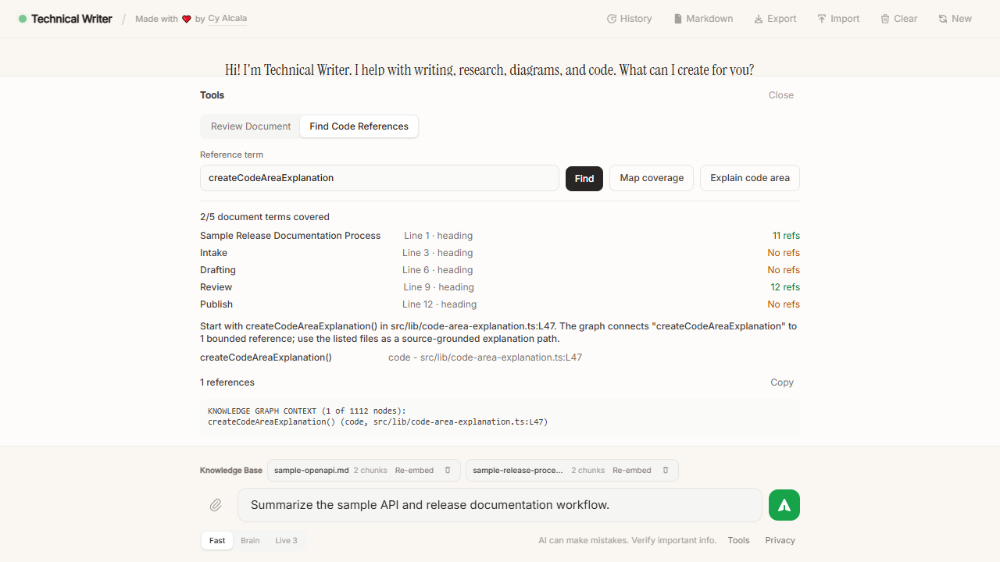
Code-area explanation gives a source-grounded scaffold for docs work.
Artifacts And Export Controls
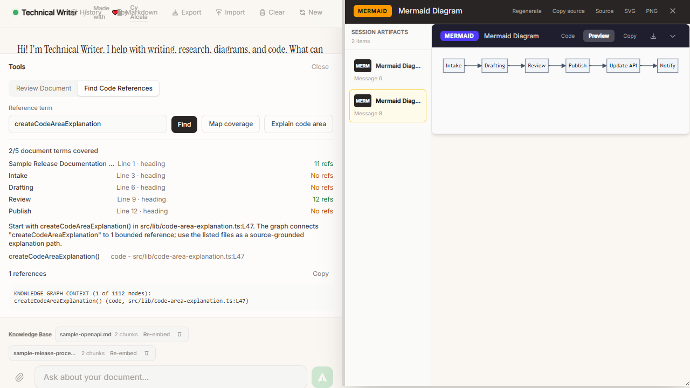
Rendered Mermaid workflow artifact in the split view.
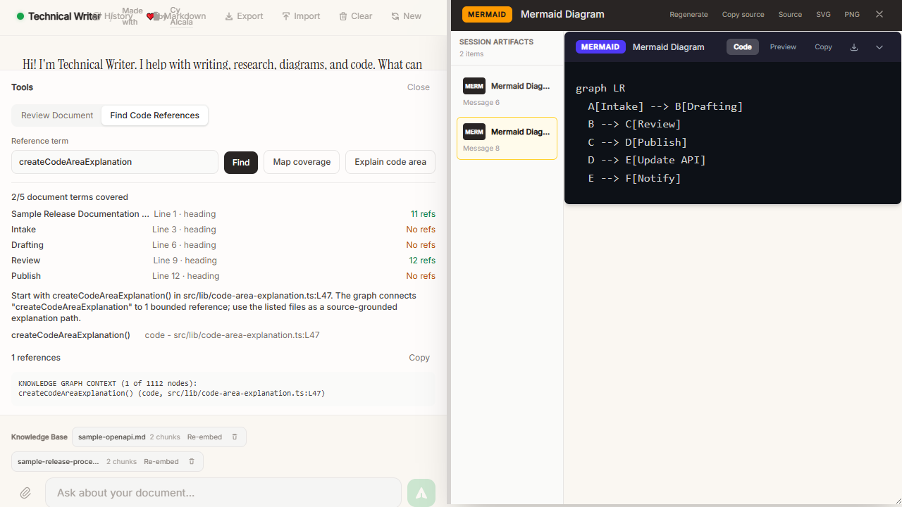
Source view plus source, SVG, and PNG export controls.
Deployment Evidence
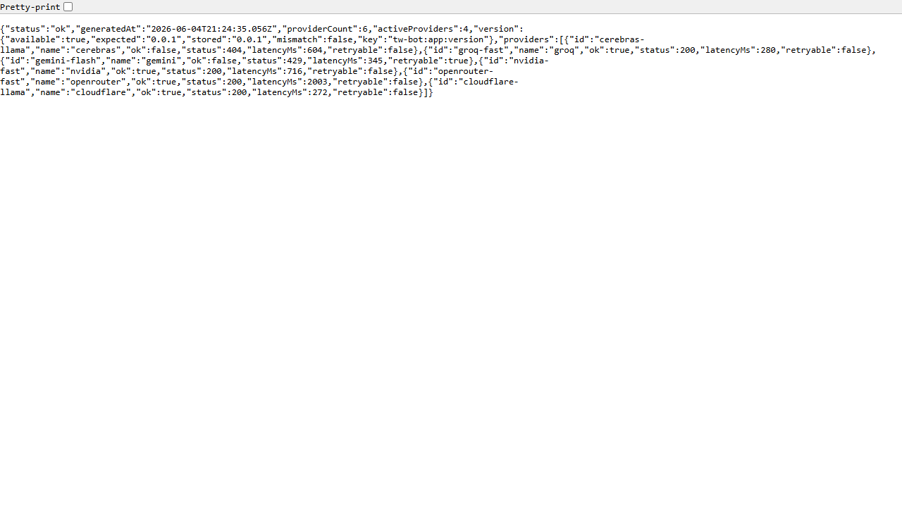
Sanitized health endpoint evidence: status ok, provider availability, matching app version.
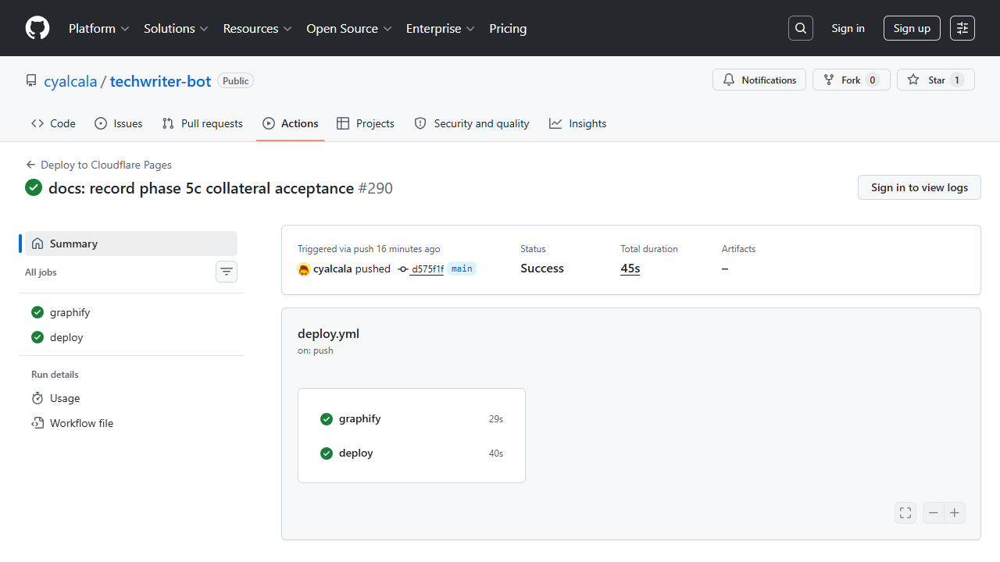
GitHub Actions success for the deployed collateral checkpoint.
Latest screenshot evidence commit: e11309e
Accepted CI run: 26981068018
Immutable URL: https://5d5d86a0.tw-bot.pages.dev
Graphify CI: 1117 nodes and 1681 edges
Production smoke: app 200, health ok, 4 active providers out of 6, app version 0.0.1 matched.
Demo Script
- Open the app and point out the active-session refresh/export boundary.
- Open the privacy notice and explain the retention model.
- Click
Try sample data. - Open
Tools, runReview Document, and show glossary rules. - Switch to
Find Code Referencesand runcreateCodeAreaExplanation. - Click
Map coverage, thenExplain code area. - Ask for a Mermaid workflow artifact and show preview, source, and export controls.
- Show health and GitHub Actions evidence.
- Close with the per-client Cloudflare deployment model.
Recruiter And Buyer Summary
Built and shipped a privacy-first AI documentation tooling engine on Cloudflare Pages/Workers with Astro and Svelte 5. The product supports AI writing, active-session document RAG with citations, deterministic review tools, bounded source graph lookup, coverage mapping, code-area explanation, diagram/artifact workflows, export features, white-label configuration, GitHub Actions deployment, and production smoke evidence.
What remains
- Client-specific onboarding.
- A real-client credential deployment pilot.
- Optional polish for a specific portfolio or PDF format.